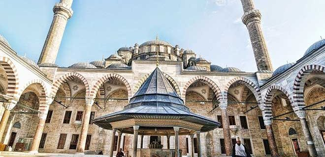
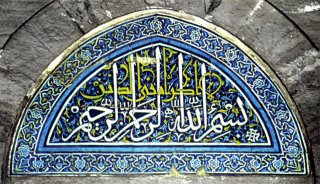
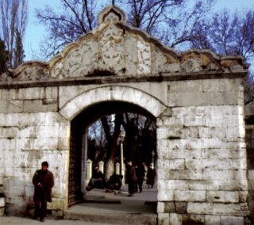
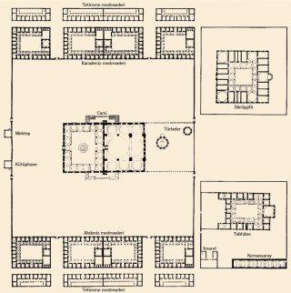
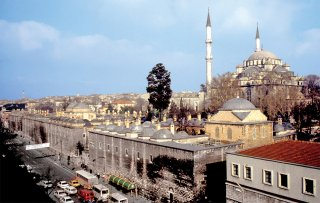
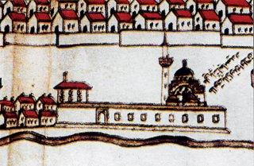
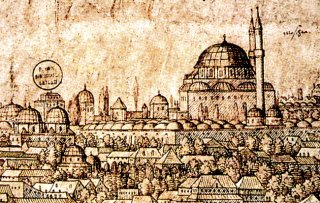

Fatih Camii

AçıklamaFâtih Sultan Mehmed, kendi adına yapılan bu cami ve külliye binaları için şehrin ortasında Bizans’ın büyük değer verdiği On İki Havâri (Hagioi Apostoloi) Kilisesi’nin yerini özellikle seçmiş görünmektedir. Bu seçim, artık buraya yeni bir inancın hâkim olduğunu gösterdikten başka şehrin bir tepesi üstünde inşa edildiği için İstanbul’un silüetine Türklüğün ve İslâmiyet’in damgasını da vurmuş oluyordu. Ayrıca burada şehircilik bakımından benzersiz bir düzenleme tasarlanmıştır. Bütün binalar tam bir simetriye göre yerleştirildiği gibi ortasında caminin bulunduğu külliye İstanbul’un en önemli dinî ve kültürel merkezini oluşturmuştur.Caminin iki yanında medreseler, bunların önünde bir tarafta tabhâne, öteki tarafta dârüşşifâ, daha ileride bir çarşı ile bir de hamam yer almıştı. Ancak Türkleşen İstanbul’un yeni bir medeniyet anlayışına göre imarının merkezi olan Fâtih Camii ve Külliyesi bütün elemanları ile günümüze kadar topluca korunamamıştır. Bazı elemanlar tamamen kaybolduğu gibi bazılarının arasına da XIX. yüzyıl sonlarından itibaren yeni binalar yapılarak külliyenin kendine has tertibi bozulmuştur. Cami. Fetihten hemen sonra Ortodoks patrikliğine tahsis edilmişken çok harap bir halde olan bu On İki Havâri Kilisesi’nde barınamayan patriğin 1455’te başka bir yere taşınmak istemesi üzerine, Fâtih Sultan Mehmed ona diğer bir kiliseyi bağışlayarak buranın yerini kendi adına yaptıracağı külliyeye tahsis etmiştir. 867 Cemâziyelâhirinde (Mart 1463) burada başlayan inşaat 875 Receb ayına (Aralık 1470) kadar sürmüştür. Bu külliyenin Khristodulos adında bir Rum mimar tarafından yapıldığı yolunda Eflak Voyvodası Dimitrie Cantemir’in (ö. 1723) ortaya attığı iddia dayanaksız olup araştırmalar sonucunda Fâtih Camii ve Külliyesi’ni yapan mimarın Atik Sinan olduğu anlaşılmıştır. Ayrıca şu husus da göz önünde tutulmalıdır ki XV. yüzyılda yapılan bu selâtin camii ve külliyesi, bütünüyle Türk mimari geleneklerine uygun ve bunun tabii gelişmesinin bir halkası olarak meydana getirilmiştir. Bu külliyede Bizans sanatına işaret eden hiçbir iz yoktur. Muhakkak ki Süleymaniye Külliyesi’nde de olduğu gibi işçiler arasında bulunan Bizanslı ustaların el emeğinden faydalanılmıştır. Külliye yapıları, Edirne’deki Üç Şerefeli Cami ile Beyazıt ve Süleymaniye camileri arasında Türk selâtin camilerinin mimari gelişmesinin bir halkasıdır. Binalarda son dönem Bizans mimarisiyle hiçbir akrabalık olmadığı gibi külliyenin merkezi olan caminin planı da Türk mimarlığının tabii gelişmesinin bir safhasına işaret eder. Bizans’ta yapı faaliyeti yaklaşık XIV. yüzyıl ortalarından itibaren hemen hemen bütünüyle durduğuna ve büyük çapta bir dinî bina yapılmadığına göre fetihten sonra birdenbire üstün kabiliyetli ve Türk yapı sanatını bilen bir hıristiyan mimarın ortaya çıkabileceğine inanmak mümkün değildir. K. Wulzinger adındaki bir Alman mimar ve mimarlık tarihçisi 1933’te yayımladığı bir makalede garip bir görüş ortaya atarak Fâtih Camii’ni tam ölçüleri ve planı bile bilinmeyen Havâriler Kilisesi’nin temelleri üzerine oturtmak istemiş ve bu yolda bazı çizimler de yapmıştır. Sağlam bir dayanaktan yoksun olan görüş Ali Saim Ülgen ve Halim Baki Kunter tarafından ciddi surette tenkit edilmiştir (1938). Esasen eski kilise ile caminin yönleri aynı olmadığına göre duvarlarından faydalanılması da imkânsızdır. Fâtih Sultan Mehmed’in İstanbul’daki hayır tesisleriyle ilgili olarak düzenlenmiş çeşitli vakfiyelerde Fâtih Camii ve Külliyesi hakkında bilgiler vardır. Arapça ve Türkçe olan bu vakfiyeler Tahsin Öz (1935), Vakıflar Genel Müdürlüğü (1938) ve Osman Nuri Ergin (1945) tarafından yayımlanmıştır. Saraçhanebaşı’nda kendi adına yaptırdığı mescid ve mezarı 1956-1958 yıkımlarında kaldırılan Mimar Ayaş’ın Fâtih devri mimarlarından olduğu bilinmekte ve Fâtih Camii inşaatında çalışmış olacağı da ayrıca tahmin edilmektedir. 1509 yılında meydana gelen ve “küçük kıyamet” denilen büyük zelzelede Fâtih Camii kubbesinin hasara uğradığı, hatta sütun başlıklarının parçalandığı ve kubbenin çarpıldığı, külliyenin dârüşşifâ, imaret ve medrese gibi yapılarının da özellikle kubbelerinde büyük zararlar olduğu bilinmektedir. 1557 ve 1754 depremlerinde yeniden hasar gören cami onarılmışsa da 1766 depremine dayanamamış, büyük kubbesi tamamen çöktüğü gibi duvarları da tamir edilemeyecek derecede yıkılmıştır. Sultan III. Mustafa, Hâşim Ali Bey’i bina emini tayin ederek önce türbe ve külliye binalarını yaptırmış, Fâtih Camii’nin yeni bir plana göre aynı yerde inşasına ise 4 Rebîülevvel 1181’de (31 Temmuz 1767) önce Sarım İbrâhim Efendi, daha sonra da İzzet Mehmed Bey nezâretinde girişilerek 1185 yılı Muharreminde (Nisan 1771) cami ibadete açılmıştır. Bugünkü Fâtih Camii ilkinden çok farklı olmakla beraber bazı yerlerinde eskisini hatırlatan iz ve kalıntılar mevcuttur. Ayrıca XIX. yüzyıla kadar tek şerefeli olan minarelere bu yüzyıl içinde birer şerefe eklenerek boyları yükseltilmiş, aynı yüzyıl sonlarında da (herhalde 1894 zelzelesinden sonra) külâhları taştan yapılarak yenilenmişse de 1966-1967’de tekrar kurşun kaplı ahşaba çevrilmiştir. Taş külâhlar, Amcazâde Hüseyin Paşa Külliyesi’ndeki Vakıflar Türk İnşaat ve Sanat Eserleri Müzesi’nde bir ara avluda yeniden kurularak korunmuştur. İlk Fâtih Camii’nin ortada bir büyük kubbesiyle mihrap tarafında bir yarım kubbesi ve yanlarda daha alçak üçer küçük kubbeli bölümleri bulunduğu eski resimlerinden anlaşılmaktadır. İlkinin şekli Mehmet Ağaoğlu, Ali Saim Ülgen, Ekrem Hakkı Ayverdi ve Robert Anhegger tarafından hemen hemen kesinlikle tesbit edilmiş olmakla beraber bazı ayrıntılar üzerinde henüz tam bir fikir birliğine varılamamıştır. Ayrıca avlu döşemesinde işlemeli yüzleri tersine çevrilerek kullanılmış bazı mermerlerin Havâriler Kilisesi’nin parçaları olduğu tesbit edilmiştir. İlk Fâtih Camii’nin dış görüntüsü ve planı, Kanûnî Sultan Süleyman döneminde XVI. yüzyıl ortasında İstanbul’da bulunan Flensburglu ressam Lorichs’in (Lorck) çizdiği 11 m. uzunluğundaki İstanbul panoramasında ve eski bir su yolu haritasında görülmektedir. Kanûnî Sultan Süleyman’ın ilk yıllarında İstanbul’a gelen ve şehrin ayrı açılardan iki resmini çizen Flaman asıllı ressam Pieter Coeck van Aalst’ın ağaç oyma gravürlerinde de ilk Fâtih Camii Galata sırtlarından ve Ayasofya’dan görünümü ile tesbit edilmiştir. Bunlara göre cami, etrafı revaklarla çevrili bir iç avluyu takip eden bir son cemaat yerine sahipti. Kavsarası mukarnaslı bir taç kapıdan girilen ana mekânı ortada büyük bir kubbe örtüyordu. Bu mekânın iki yanında kubbeli daha küçük mekânlar bulunuyordu. Caminin mihrabı ise orta mekânın yarısı büyüklüğünde olan ileri taşkın bir bölümde idi. Bu bölümün üstü bir yarım kubbe ile örtülmüştü. İlk Fâtih Camii planı bakımından, ondan az sonra inşa edilen Çemberlitaş yanındaki Atik Ali Paşa Camii’nin çok daha büyük çapta bir benzeri idi. Ayrıca benzeri bir yapı şeması Konya’da II. Selim tarafından yaptırılan Selimiye Camii’nde de tekrarlanmıştır. İlk Fâtih Camii’nden bugüne ulaşabilen kalıntıların başında eski dış avlu kapısı gelir. Bunun üstünde kakma tekniğinde renkli taşlarla bezenmiş bir taç kısmı vardır. Cümle kapısı duvarı ve buna köşelerde bitişik iki minarenin kürsü, pabuç, hatta gövdelerinin başlangıçları da ilk Fâtih Camii’nden kalmıştır. Bunlardan birinci kürsü kısmında taşa işlenmiş olan güneş saati Süheyl Ünver’e göre XV. yüzyılın ünlü âlimi Ali Kuşçu’nun bir hâtırasıdır. İç avluda görülen iki pencere alınlığını süsleyen bir çift çini pano da ilk Fâtih Camii’ndendir. Tamamen XV. yüzyıl özelliğine sahip olan bu çini levhalardan birinde besmele, diğerinde Âyetü’l-kürsî’den bir kısım yazılmış olup aralarında yalnız XV. yüzyıl çini süslemelerinde görülen sarı renk kullanılmıştır. Bu kalıntılar göz önünde tutulduğunda ilk Fâtih Camii’nin içinin de çinilerle kaplı olduğu söylenebilir. 1766 zelzelesinin arkasından III. Mustafa tarafından yaptırılan bugünkü Fâtih Camii bütünüyle değişik bir düzende inşa edilmiştir. Avluyu takip eden ve son cemaat yerini ayıran kuzey duvarı ilk camiden kalmış, genellikle kabul gördüğü üzere kıble duvarı ileri alındığından cami harimi daha da büyümüştür. Taçkapı üstünde ilk yapıdan kalan Ali Sofî hattıyla yazılmış iki satır halinde bir kitâbe yer almaktadır. Caminin esas mekânı (harim), dört yarım kubbe ile desteklenen bir ana kubbe sistemine göre evvelce Şehzade, Sultan Ahmed ve Yeni Vâlide camilerinde uygulanan düzende yapılmıştır. Dört kemerin desteklediği bu örtü ortadaki dört pâyeye bindirilmiştir. İkinci Fâtih Camii’nin bütünü eski Türk klasik mimarisine uymakla beraber pâyelerin yarım yuvarlak köşe pahları, bilhassa kemer ve yarım kubbe başlangıçlarını ayıran kademeli profilli silmeler, XVIII. yüzyılın ikinci yarısında Türk sanatına hâkim olan barok üslûbunun özelliklerine sahiptir. Caminin iç yüzeylerini kaplayan kalem işleri nakışlar da barok üslûbundadır. Fakat ikinci Fâtih Camii, İstanbul silüetindeki genel görünümü bakımından klasik üslûptaki eserlerden bir farklılık göstermez. Ayrıca kendinden daha önce yapılmış olan Nuruosmaniye Camii’nin ağır barok görünümünden de uzak kalarak Osmanlı dönemi Türk klasik üslûbuna daha yaklaşıktır. Türbeler. Fâtih Türbesi. Fâtih Sultan Mehmed 1481’de Gebze yakınındaki Sultançayırı’nda vefat edince cenazesi İstanbul’a getirildi ve Fâtih Camii’nin kıble duvarı önünde uzanan hazîre alanındaki türbeye gömüldü. Fâtih’in vefatından önce veya sonra mı yaptırıldığı kesin olarak bilinmeyen bu türbe, 1766 depreminde çevresindeki yapılarla birlikte harap olmuşsa da kısa zamanda onarılmıştır. Bu büyük onarım sırasında türbenin ilk yerine nazaran daha ileriye alındığı iddia edilmiştir. Buna göre türbe daha ileride yeni baştan yapıldığından Fâtih’in mezarı da şimdiki caminin mihrabı altında kalmıştır. Halbuki bazı yeni araştırmalara dayanan bir iddiaya göre Fâtih Camii’nin kıble duvarı ileri alınmamış, türbe de eski yerinde ve ilk binanın temelleri üzerinde kurulmuştur. Bu tartışma, ancak türbe duvarları ve döşemesinde yapılacak ciddi bir araştırma ile halledilebilir. Fakat yaygın bir söylentiye göre Fâtih’in naaşı, türbeden caminin mihrabı altına kadar uzanan bir dehlizin sonundaki bir mezar odasında bulunmaktadır. Burasının, aslında yerin derinliklerinde Havâriler Kilisesi’nden kalma bir mahzenken türbenin inşasından sonra mezar odası olarak kullanıldığı düşünülebilir. Ayrıca bazı söylentilere göre Fâtih Sultan Mehmed’in naaşı burada tahnît edilmiş olarak durmaktadır. II. Abdülhamid, bir heyete kabrin içine inme emri verip Fâtih’in cesedinin altındaki tabutluk tabanı değiştirilmiştir. 1782’deki Cibali yangınında halkın yangından kurtardığı eşyalarını cami avlusuna yığması yüzünden buraya sıçrayan ateş türbeyi de sarmış, türbenin içi bütün eşyası ve sandukası ile birlikte yanmıştır. I. Abdülhamid tarafından türbe tamir ettirilmiş, yenilenen kapı söveleri üstüne 1199 (1784-85) tarihli bir kitâbe yerleştirilmiş, yeni sanduka ise bir Kâbe örtüsüyle örtülmüştür. Sultan Abdülaziz de 1282’de (1865-66) türbeyi tamir ettirerek iç süslemesini yeniletmiştir. Son onarımlar Mehmed Reşad zamanında (1909-1918) ve 1952-1953 yıllarında yapılmıştır. Lâleli Camii Türbesi’ndeki alçı pencerelerin taklidi olan pencereler bu sonuncu onarımda konmuştur. Türbe sekiz köşeli bir plana göre yapılmış olup üzerini tek kubbe örtmektedir. Giriş kısmında, kapı üstündeki saçağı taşıyan iki sütunlu bir sundurması vardır. Bu bölümün üstünü örten geniş saçak geç bir devirde ilâve edilmiştir. Türbenin dış mimarisi, pencere biçimi bakımından klasik Türk yapı sanatı geleneğine bağlı görünmekteyse de sekiz köşeli esas gövdenin köşelerini kuvvetlice destekleyen çıkıntı halindeki kare pâyeler ve bunların üzerinde binayı çepeçevre dolanan kademeli profilli silmeler barok üslûbunun açık delilleridir. Türbenin içinde Fâtih Sultan Mehmed’den başkasına ait sanduka yoktur. Nitekim eski bir gravürde de sade bir sandukadan başka kubbesinde küçük kandillerin asılı olduğu görülür. Abdülaziz tarafından türbe yeniden döşendiğinde içi saraydan gönderilen birçok eşya ile süslendiği gibi kubbesine kristal bir avize asılmış, pencerelerine perdeler takılmıştır. Fâtih Türbesi Türk edebiyatına, Tâcîzâde Câfer Çelebi’nin 1493’te yazdığı Hevesnâme’deki “Sıfât-ı Mezâr-ı Sultân Mehemmed” adlı manzum parça ve Abdülhak Hâmid’in 1877’ye doğru yazılarak ancak 1909’da yayımlanan “Merkad-i Fâtih’i Ziyaret” adlı şiiriyle girmiştir. Bu şiirin, devrin iyi bir hattatına yazdırılarak şaire de imzalatılan kopyası bir levha halinde I. Dünya Savaşı’nda törenle türbeye konmuştur. Gülbahar Hatun Türbesi. Fâtih Türbesi’nin az ilerisinde daha küçük ölçüde olmak üzere zevcesi Gülbahar Hatun’un ayrı bir türbesi bulunmaktadır. Bu da sekiz köşeli bir plana sahip üzeri kubbe ile örtülü bir yapıdır. Genel dış görünüşü klasik Türk mimarisine daha sadık bir ifadeye sahip olmakla beraber üst sıra pencerelerin yuvarlak kemerli olması, bunun da 1766 zelzelesinden sonra geniş ölçüde onarıldığını belli etmektedir. Esasen bir belgede de 1181 (1767-68) tarihinde tamirin bittiği kaydedilmekte ve bu iş için yapılan harcamalar gösterilmektedir. Gülbahar Hatun Türbesi ayrıca 1782 yangınından zarar görmüş ve aynı yıl tamir edilmiştir. Burada Fâtih Sultan Mehmed’in zevcesinden başka bir kızı ile iki saraylının da kabri bulunmaktadır. Nakşidil Vâlide Sultan Türbesi. Fâtih Camii hazîresine XIX. yüzyılda II. Mahmud’un annesi Nakşidil Sultan için büyük bir türbe ile yanında bir de sebil inşa edilmiştir. Bu eser dalgalı hatları, dışarıdan dilimli büyük kubbesi, oval pencereleri, yaprak biçimindeki kabartma süsleriyle barok üslûbunun Türk türbe mimarisindeki başarılı bir örneğidir (bk. NAKŞİDİL SULTAN KÜLLİYESİ). Kütüphane. Fâtih Camii ve Külliyesi’nin bir kütüphanesi de vardı. Ancak kütüphane ilk kurulduğunda müstakil bir binaya sahip değildi. İstanbul vakıf kütüphanelerinin altın devri olan XVIII. yüzyılda caminin kıble tarafına kubbeli ayrı bir kütüphane binası inşa edilmiştir. Bu bina da son yıllarda çatladığından boşaltılarak içindeki kitaplar Süleymaniye Kütüphanesi’ne taşınmıştır (bk. FÂTİH KÜTÜPHANESİ). 1742’de inşa edilen kütüphanenin dış avluya açılan ve mermer merdivenlerle çıkılan kapısından başka caminin içine açılan ikinci bir kapısı vardır. Burada korunan kitapların rutubetten zarar görmemesi için pek çok benzerinde olduğu gibi yapının altında bir mahzen bulunur. Fakat bakımsızlık yüzünden kubbe ve duvarlarda gittikçe büyüyen çatlaklar bugün son derece tehlikeli bir duruma gelmiştir. Bu yüzden kütüphanenin tamiri önemli bir problem halini almış bulunmaktadır. Medreseler. Fâtih Sultan Mehmed, şehrin fethinin hemen arkasından öğretim faaliyetlerinin sürdürülmesi için Bizans’ın en büyük manastırlarından Pantokrator Manastırı’nın keşiş odalarını medreseye çevirmiş, kilisesini de camiye dönüştürmüş ve başına çağının ileri gelen ilim adamlarından Molla Zeyrek’i tayin etmişti. Ayrıca camiye çevrilen Ayasofya’nın yanında kurulan ilk medresenin idaresi de Molla Hüsrev’e bırakılmıştır. Fâtih Camii’nin iki yanındaki medreselerin yapımı 1470’te tamamlanıncaya kadar dersler bu medreselerde yapıldı. Külliyenin en değerli elemanlarını meydana getiren medreseler böylece Türkleşen İstanbul’un en önemli öğretim merkezi olarak şehirdeki üniversitenin ilk başlangıcını teşkil etti. Caminin iki yanındaki medreselere Sahn-ı Semân adı verilmişti. Bu büyük medreselerin dışında yine iki yanlarda, arazinin meyilli olmasından dolayı daha aşağıda yer alan Tetimme denilen hazırlık medreseleri inşa edilmişti. Bunlardan Marmara tarafında olanlar, Edirnekapı yönünde uzanan Fevzipaşa caddesinin genişletilmesi sırasında bütünüyle yıktırılmış, Haliç tarafında olanların yerlerine de bir ilkokul yapılmıştır. Ancak tamamen yok edilmeden önce rölöveleri çıkarılmadığından Tetimme medreselerinin tam ve doğru planları yerine sadece tahminlere dayanan planları çizilebilmiştir. Ayrıca bu yapıların mimari özellikleri de bilinmemekte, üzerlerinin bir çatı ile örtülü olduğu tahmin edilmektedir. Büyük medreselerden Haliç tarafındakilere Bahr-i Siyâh (Karadeniz), Marmara tarafındakilere Bahr-i Sefîd (Akdeniz) medreseleri denilmektedir. Bunlar Saraçhanebaşı’ndan Edirnekapı’ya doğru Baş Kurşunlu, Baş Çifte Kurşunlu, Ayak Çifte Kurşunlu, Ayak Kurşunlu medreseleri diye adlandırılıyordu. Bu eğitim yapılarının her biri on dokuzar hücre ve birer büyük kubbeli dershane-mescidden oluşmuştur. Taş ve tuğladan yapılmış olan bütün bu medreselerin ortalarında revaklı avlular vardır. Fâtih Külliyesi’nin medreseleri 1766 depreminde cami ve diğer müştemilât binaları ile birlikte büyük ölçüde zarar görmüş, dârüşşifâ ihmal edilirken medreseler cami ile beraber derhal onarılmıştır. Ancak Tetimme medreselerinin yıktırılmasından sonra toprak tabakasının cadde seviyesine kadar indirilmesi yüzünden Akdeniz medreselerinin yan duvarları tehlikeli duruma girdiğinden bunları kalın gergi demirleriyle destekleme gereği duyulmuştur. Fâtih Külliyesi’nin ayakta kalabilmiş sekiz büyük medresesi, 1955’ten itibaren zaman zaman Vakıflar İdaresi tarafından büyük ölçüde onarılarak öğrenci yurdu halinde kullanılmaktadır. Tabhâne. Fâtih Külliyesi’nin önemli parçalarından olan tabhâne, Akdeniz tarafındaki Baş Kurşunlu Medresesi’nin ilerisinde inşa edilmiştir. Esasında misafirhane olan bu bina da bir medrese mimarisine sahip olup itinalı bir işçilikle yapılmış ve tabhâne fonksiyonu kalktıktan sonra medrese olarak kullanılmıştır. Mescid mekânının herhalde 1766’da yıkılan kubbesi 1956’dan sonra yeniden yapılmıştır. Burada ayrıca gerek külliyenin görevlilerine, gerek tabhânede kalanlara ve gerekse medreselerde barınan öğrencilere yemek çıkaran aşhane-imaret bulunuyordu. Arazinin yüksek bir yerinde inşa edildiğinden binanın altında ayrıca bir kervansaray yapılmıştı. Dârüşşifâ. Tabhânenin simetriğinde, Karadeniz tarafındaki medreselerinin hizasında İstanbul’un Türk dönemine ait ilk hastahanesi olan dârüşşifâ inşa edilmişti. Burası ortası açık avlulu, etrafında hücreleri olan medreseyi andırır bir yapı idi. Güney tarafında kubbeli bir mescid vardı. Arşivdeki bazı belgelere göre dârüşşifânın mütevellisi Osman Ağa, 27 Zilkade 1239 (24 Temmuz 1824) tarihli yazısı ile binanın 1160 ([1747], doğrusu 1179 [1766] olacak) zelzelesinde hayli harap hale geldiğini, metruk halde bulunan yapının üzerindeki kurşunların eksilmekte olduğunu bildirerek bunların kaldırılmasını, dârüşşifânın da yıktırılarak arsasının satılmasını istemektedir. II. Mahmud ise dârüşşifânın ihyâsını veya hana çevrilmesini uygun görerek Hassa mimarı Mustafa’nın bir keşif yapmasını emretmiştir. Mütevelli ile iyi uyuştuğu anlaşılan mimar raporunda, dârüşşifânın üstü ahşap çatılı otuz beş odalı bir hana dönüştürülmesinin çok masraflı olacağını ileri sürerek fazla gelir sağlamayacak bu proje yerine dârüşşifânın yıkılmasının ve ahşap evler yapılmak üzere arsanın satılmasının daha uygun olacağını bildirmiştir. Böylece dârüşşifânın hücreleri ortadan kalkmış, yalnız mihrap kısmı çıkıntı teşkil eden ve keşif planında yemekhane olarak gösterilen kubbeli mescid bırakılmıştır. Bu bölüm Demirciler Mescidi adıyla bir süre kullanılmış, hatta Paspatis tarafından eski bir Bizans kilisesi kalıntısı olduğu sanılarak öylece tanıtılmış ve bir süre yayınlara bu şekilde girmiştir. Arşivde bulunan plan, dârüşşifânın gerçek düzeniyle mahalle mescidi olan kısmını açıkça ortaya koymaktadır. 1870’lerde çizilen İstanbul planında dârüşşifânın yeri yapı adalarına bölünmüş olarak görülmektedir. Ayrıca eski fotoğraflarda mescidin büyük kubbesi de belirlidir. İstanbul’da derin izler bırakan 1894 zelzelesinde Dârüşşifâ-Demirciler Mescidi’nin önemli ölçüde harap olduğu anlaşılmaktadır. 1895’te bir harabe durumunda olan bu yapı 1908’de Çırçır, arkasından da 1918 yangınında çevredeki ahşap evlerin yanmasıyla daha da harap olmuştur. Geçen zaman içinde bir daha onarılmayan bu bölüm tamamen yok olmuş, Eski Şifâhâne ve Keresteciler sokaklarının sınırladığı parsellerde de evler yapılmıştır. Bunların aralarındaki boş arsalarda 1950’lere kadar görülebilen son duvar kalıntıları bugün yok olmuştur. Önceleri buradaki evler bütünüyle istimlâk edilerek eski temelleri üzerine dârüşşifânın ihyâ edilmesi ve burada bir Fatih Kültür Merkezi’nin yapılması tasarlanmış, fakat bu da gerçekleşmediğinden arsa ve evlerin yerine apartmanlar inşa edilmiştir. Bugün dârüşşifâdan hiçbir iz kalmamıştır. Muvakkithâne. Çörekçi ve Boyacı kapıları arasında, Fatih Meydanı’na bakan bir yerde olan muvakkithânenin esas binasının eskiden yapıldığı ve sık sık ahşap olarak yenilendiği bilinmektedir. Sadrazam Hacı Mehmed Paşa tarafından 1163’te (1749-50) ve III. Selim zamanında (1789-1807) tamir ettirilmiş, 1918 yangınında ise tamamen yanarak ortadan kalkmıştır. Hazîre. Fâtih Camii’nin, kıble tarafında etrafı duvarla çevrili olarak uzanan hazîresinde aralarında sivil, asker, ulemâ ve meşâyihten ünlü şahsiyetler bulunan pek çok kişi yatmaktadır. Genellikle XIX. yüzyıla ait olan bu kabirler arasında Plevne kuşatmasının ünlü kumandanı Gazi Osman Paşa’nın da türbesi yer alır. Kervansaray. Fâtih Külliyesi’nin kervansarayı tabhâne ile aşhane-imaretin altında bulunmaktadır. 1766 zelzelesinden sonra külliyenin zarar görmesinden endişe duyularak içi toprak doldurulmuş ve tonozu kısmen yıkılmış olan bu bölüm 1980’li yıllarda Vakıflar İdaresi tarafından temizlenerek tamir edilmiş ve cadde tarafında önüne yapılan yeni dükkânlarla birleştirilmiştir. Bu sırada kervansarayın içinde, ne işe yaradığı anlaşılmayan ve hiçbir taşıyıcı görevi bulunmayan dikili durumda kalın bir taş sütun ortaya çıkmıştır. Çarşı (Arasta). Fâtih Külliyesi’nin güney tarafında birçok dükkândan meydana gelmiş, vakfiyelerde de adı geçen büyük bir çarşı bulunuyordu. XVII. yüzyılın ikinci yarısında yazıldıkları tahmin edilen ramazannâmelerden birinde burası, “Beş kapısı vardır ayân / Ehl-i dilden olmaz nihân / Dükkânları kâgir binâ / Cedîd oldu öyle seyrân” mısraları ile anlatılır. İçlerinde saraç esnafı yerleştiğinden Saraçlar, Kavaflar çarşısı veya Saraçhane olarak adlandırılan bu çarşıya ait dükkânlar XX. yüzyılın başlarında oldukça eksilmesine rağmen birçok dükkân gözü hâlâ duruyordu. 1918’de büyük Fatih yangınından sonra bunlar da ortadan kalktığından külliyenin evvelce oldukça geniş bir alanı kapladığı eski bir şehir planından anlaşılan çarşısından bugün pek bir şey kalmamıştır. Ancak günümüzde Saraçhanebaşı mahallesinde Dülgerzâde Camii’ne komşu kâgir tonozlu bir iki dükkân hücresinin bu çarşının son kalıntıları olduğu sanılmaktadır. Hamam. Külliyenin güney tarafında bir de hamam yapılmıştı. Burada arazi çevreye nazaran daha derin olduğundan ve hamam bu çukurun içinde bulunduğundan “Çukur Hamam” olarak adlandırılmıştır. 1766 depreminde büyük ölçüde zarar gören hamam daha sonra tamir edilmediğinden başka maksatlarla kullanılmış ve zamanla harap olmuştur. Charles Texier ancak uzun aramalardan sonra hamamı bulabilmiş ve tam doğru olmayan bir planını çizerek yayımlamıştır. Çok büyük ve oldukça süslü bir yapı olduğu anlaşılan Çukur Hamam bu tarihten sonra o derece tahribe uğramıştır ki İstanbul hamamları hakkında bir kitap yazan H. Glück 1917 yılında bu yapının en ufak bir izini bile bulamamıştır (bk. ÇUKUR HAMAM). Fâtih Camii ve Külliyesi’nin İstanbul’un şiddetli her zelzelesinden zarar görmesi sağlam bir zemin üzerine oturmadığını gösterir. Tetimme medreseleri gibi ona destek olacak bazı unsurların ortadan kalkması da yapıya zarar vermiştir. İstanbul’un fethinden sonra kurulan bu ilk büyük selâtin külliyesinin bugün pek çok parçasının eksilmiş durumda olması şehrin Türk devri tarihi bakımından büyük bir kayıptır.
|
|       |
|
Açılış tarihi: 1771 Mimari biçimi: Osmanlı Mimarisi Mimar tarzlar:Bizans Mimarisi, Osmanlı Mimarisi Mimarlar:Atik Sinan, Mehmed Tahir Ağa Defnedilen kişiler: Fatih Sultan Mehmet,Halil İnalcık Maddeler: Garabet Amira Balyan |
|
|
Adres: Ali Kuşçu, 34083 Fatih/İstanbul |
|
|
Kapalı Günler Yok |